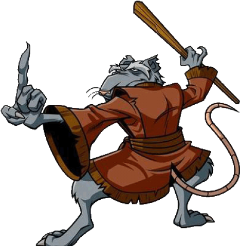
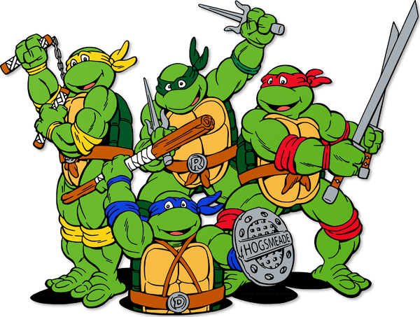

- Mikelangelo
- His signature weapons are dual nunchaku
- Prefers to have a good time rather than train
- The youngest of the group
- He is usually depicted wearing an orange eye mask
- Leonardo
- Highly skilled in ninjutsu
- Olympic-level agility, speed and strength
- Keen strategist
- Master of stealth
- Mastery of kenjutsu and iaido
- Donatello
- He is usually depicted wearing a purple eye mask
- His primary signature weapon is his effective bō staff
- In all media, he is the smartest of the four turtles
- Donnie often speaks in technobabble with a natural aptitude for science and technology
- His ninja skills are the lowest of the four turtles
- Rafael
- He is usually depicted wearing a red eye mask
- Raphael wields twin sai
- Raphael is known for his temperamental and cynical personality, being short-tempered, aggressive, sullen, maddened, sarcastic, and rebellious
- The origin of Raphael's anger is not always fully explored, but in some incarnations appears to stem partly from the realization that they are the only creatures of their kind and ultimately alone

